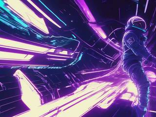
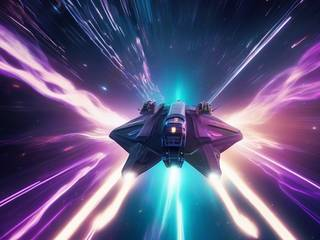
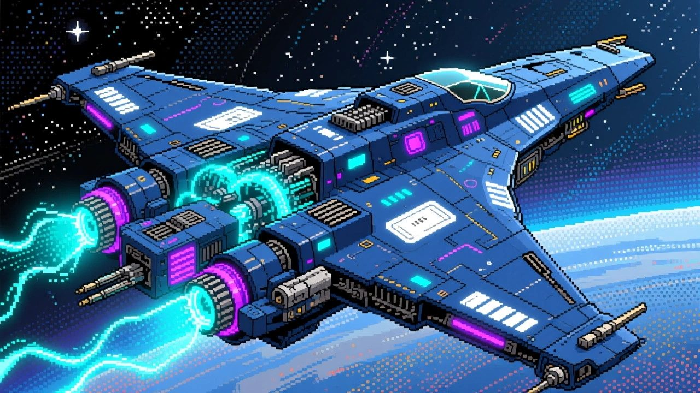
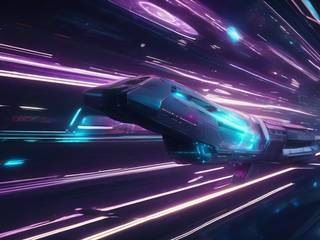
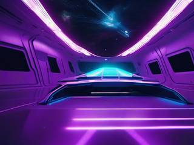
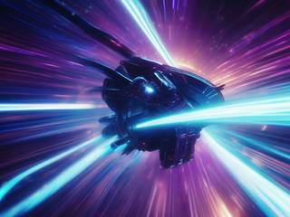
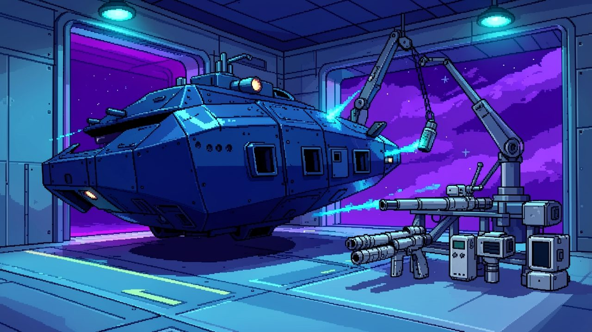
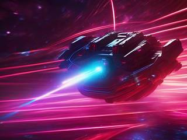
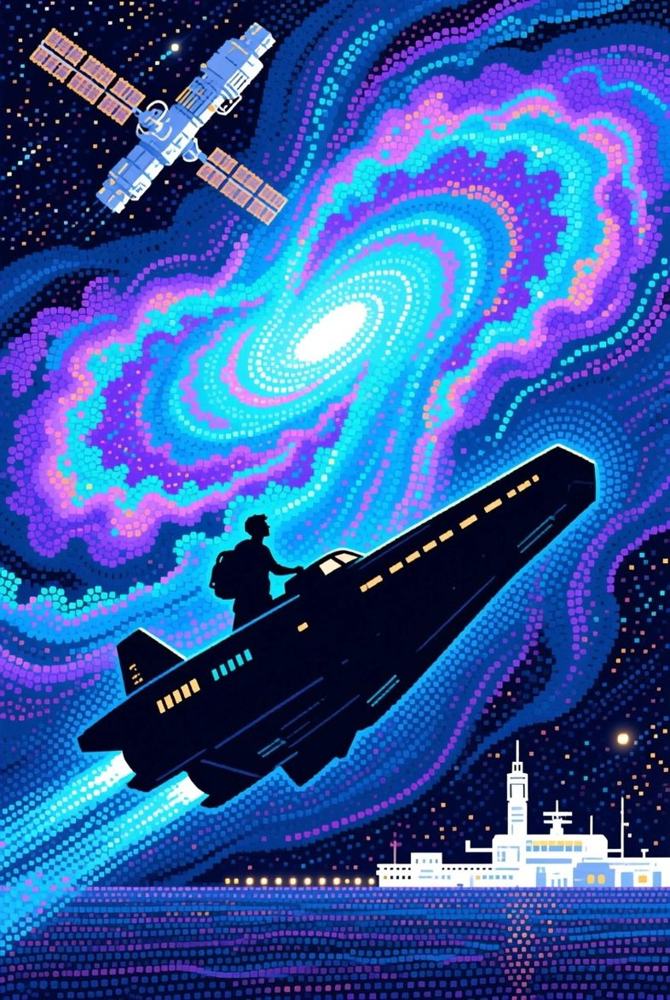

Free to forkNo licence and no copyright claim: build this game under your own name, or lift one idea from it. Why?
Game overview
Spacelancer is a space flight game about one freelancer's career in a living sector of space. You fly a ship built from plug-in parts, take whatever work you like, side with a faction or with nobody, and retire in a way of your own choosing: rich, crowned, celebrated or legendary.
It takes the open sector of Freelancer, the fittings and firing arcs of Starsector, the ship classes of Homeworld and the transforming starfighters of Diable Avionics, a Starsector mod, and folds them into one streamlined game: easy to fly from the first minute, with plenty to think about while you fly.
Every freelancer is a new character with a randomized start, in the same universe, a few years after the last one retired or fell. The universe keeps what they did.
Target audience
Players who loved the freedom of Freelancer, Escape Velocity or Starsector: a ship of their own, a big map, and nobody telling them what to do next.
They're hungry for a career that's theirs to steer, and frustrated by space games that end when the story does, or that bury the flying under spreadsheets.
The controls are mouse and keyboard, flight-sim simple: the ship goes where the mouse points. The depth sits in loadouts and decisions, not in the controls.
Game's purpose
Freedom and choice: work for anyone, fight anyone, retire however you like.
Variety and discovery: a reshuffled sector for every freelancer, and ships and gear that keep changing hands.
Excitement and power: dogfights in a ship that folds into a fighting frame.
It deliberately avoids draining rest and respect (save and stop anywhere; losing a ship is a setback, never a wall) and autonomy (no main quest pulling you along).
Core concept
Open-world space games usually offer a fixed story with a sandbox left over after the credits, or an endless sandbox with no reason to keep going.
Spacelancer gives each freelancer a finite career with a goal they choose, retirement, inside an infinite universe: when one freelancer retires, the next one starts a few years later in the same sector, reshuffled.
Ships and gear are easy to get and easy to lose, so the game is about using them, not hoarding them.
"The lanes and gates stay. The planets drift, and every few years the sector is a different place."
Lore and story
A sector that keeps moving
Spacelancer takes place in one large sector of space: star systems full of planets, stations, nebula clouds, asteroid and debris fields, minefields and stranger anomalies, linked by transit lanes for fast travel and by jump gates and jump holes to the far regions.
Every place you can dock belongs to someone. Corporations, navies, civilian worlds, raiders, pirates, criminal families and a secretive order that hoards old technology all hold territory, and all have their own opinions of each other.
The sector moves. Between one freelancer's story and the next, a few years pass and the celestial bodies shift: routes open and close, fields drift, borders and fortunes change. It's the same universe with its history intact, but it never stands still long enough to be solved.
Freelancers

You're a freelancer: a pilot with your own ship and equipment, beholden to nobody. Take jobs, join a faction and climb its ranks, or stay independent and get rich.
Each freelancer starts somewhere different, as a corporate contractor, a raider, a navy pilot, a civilian, a member of the order, a pirate or a family soldier, with their own traits and talents. Most of those talents are about flying and fighting, trading, followers and favors, and how much the ship can carry.
Nobody dies out here

Almost no one dies in a space fight. Every pilot carries a teleport tether that yanks them to safety when their ship breaks apart. It keeps the fights light: everyone lives to talk trash after winning or losing, and the pilot you beat today can come back next week with a grudge and a better ship.
The job right now
Make a name, make a fortune or make a difference, then retire somewhere cozy and safe. How you get there is entirely up to you.
Controls and interface
You fly one ship at a time, the Freelancer way: the ship turns toward the mouse, the throttle sets your speed, and the guns fire where you point. Ships that can transform switch to frame mode, where they fly in any direction like a mecha and turn on the spot. The layout below is a suggestion; the design fixes what the controls do, not which keys do it.
Two ways to aim sit side by side: guns fixed forward fire where the ship points, and turrets follow the mouse freely within their firing arcs. The shield is always on and recharges, the hull slowly repairs itself, and the hotbar holds a limited stock of repair nanobots and shield batteries for when that isn't enough. Fuel and life support never run out.

"Flight mode is fastest in a straight line. Frame mode turns on the spot and strafes in any direction, which wins dogfights."
Game layers
01 · Moment-to-moment
A fight in an asteroid field
Most fights are dogfights and skirmishes among asteroids, wrecks and stations: flight mode and the throttle for the approach, a transform to frame mode when the enemy is close, boosts to dodge, and a loadout built to break the three layers of whatever you're fighting.
Between fights there's flying itself: cruising, riding the lanes, pulling in salvage with the tractor beam, docking to trade and refit. Every ship can handle small targets, big ones and swarms, take a beating and go fast; some are just better at one of those than the rest.
02 · Low metagame
One freelancer's career

A playthrough is one freelancer: a career of many hours from a randomized start to retirement, with total freedom in how you get there. There are six ways to retire, inspired by the different victories in Civilization and Master of Orion, and you can switch your aim whenever you like:
Retire by
How
Fortune
Trade and deal until you're rich enough to stop
Rule
Become a faction's ruler, by conquest or by climbing its ranks
Pilgrimage
Complete a grand tour of the sector's great cultural sites
Science
See one faction's great technology project through, job by job
Legend
Track down a set of legendary treasures
Heroism
Wipe out the alien menace troubling the sector
Or die trying. That's a story too.
03 · High metagame
The universe and its hall of fame
The universe outlasts every freelancer. When one retires, the next starts a few years later in the same universe, reshuffled by the celestial movements, among the factions, wrecks and rivals the last one left behind.
From the main menu you can walk through the hall of fame, where every retired freelancer stands as a statue: inspect one to see their name, how they retired, and the ship and loadout they finished with. The graveyard holds the careers that ended in a death you chose to keep instead of reloading. Together they're your history in the sector, not a scoreboard.
04 · Practical game flow
An evening at a time

A career is long, so it's built to be played in pieces. Save anywhere, stop anywhere, and come back to the ship exactly where you left it. A session might be a few jobs, a trade run between two systems, or a long hunt for one legendary wreck.
There's no clock, no expiring offer and nothing in the sector that punishes you for being away.
Game modes
There's one mode, a freelancer's career, and one choice that changes how it plays:
Way to play
What a death means
Standard
Save and load whenever you like. A death is a setback: reload, or accept it and send the freelancer to the graveyard.
Honor mode
Opt-in, for players who want every death to stick. A death is final and the freelancer's save is deleted. The sector keeps their wreck and their hidden stashes for later freelancers to find, the next freelancer inherits some of their gear, and now and then the fallen pilot returns as a rebuilt cyborg rival, flying everything they had and more.
Either way, nothing about the universe resets. Each new freelancer arrives in the sector their predecessors shaped.
Features and mechanics
Two ships in one
Flight mode and frame mode

Ships that can transform switch between two ways of flying, an idea taken from the Diable Avionics mod, where fighters and frigates fold out into mecha. Flight mode handles like Freelancer: throttle-based, fastest in a straight line, with strafing and an engine cut that lets you drift and swing around on your momentum. Frame mode flies like Nova Drift or Strike Suit Zero: omnidirectional, turning on the spot, slower at top speed but far better in a close fight.
Instead of a single afterburner, both modes have three directional boosts in the style of Armored Core 4. The boost is steady and efficient. The quick boost is a short, sharp dodge. The overboost charges up, then throws you a long way in one continuous burn, with a cooldown afterwards. For crossing a system, the cruise engine is still the way to go.
Wasps, dragonflies and crows
Hull classes and the mothership
Ships come in three classes, after Homeworld's, and the sector decides where each one can go:
Class
Good at
Where it goes
Fighter (a wasp)
Agility; small enough to slip in anywhere
Dense asteroid fields, tight wrecks, cramped stations
Corvette or frigate (a dragonfly)
Fighting several targets at once with heavier power, free of a capital ship's burdens
Most of the sector
Destroyer to dreadnought, carrier (a crow)
Sieges; ice-breaking through small debris at reduced speed
Radiation and heat zones that would cook a small ship; stopped by big obstacles
You can fly any of them, which is why a freelancer can own a mobile base: a large ship that carries a medium or small one inside, the way the Cyclops submarine carries the Prawn suit in Subnautica. Park the crow at the edge of the asteroid field and go in with the wasp.
Square peg, square hole
Hardpoints and loadouts
Building a ship is deliberately simple. A ship is a hull with hardpoints, and gear plugs into a socket of the matching size and type. Sizes run small, medium, large and capital. Types are energy, ballistic and missile, plus mixed hardpoints that take either of two types and omni hardpoints that take anything. Fixed mounts fire straight ahead; turrets swivel, each within its firing arc, so a ship has strong angles and blind spots.
Splitters, from Space Pirates and Zombies, make big hardpoints flexible: one large mount can carry two mediums or three smalls, or give up its rotation to hold one extra-large fixed gun. Utility hardpoints carry boosters and equipment. Ships come ready to fly with preset weapons, as in Homeworld, and you change only what you want to.

"Every weapon plugs into a socket of its size and type. If it fits, it works."
Shield, armor, hull
Three layers to break
Every ship has three layers of protection, as in Mass Effect 2 and 3: a regenerating shield, armor under it, and the hull last. Weapons are better against some layers than others, so a loadout is a plan: something to knock the shield down, something to strip the armor, something to finish the hull.
The arsenal covers lasers, cannons, particle guns and mass bombs, plus missiles, mines, torpedoes and cruise disruptors that knock a fleeing ship out of cruise. Energy weapons never run out of ammunition; they draw on the reactor instead.
Makers, heat and wear
Gear with a personality

Weapons and equipment come from manufacturers with their own design philosophies, and each item is assembled from its maker's parts with some randomness. The idea is Borderlands 2's, with the variety coming from parts that genuinely behave differently rather than from endless renamed copies. Upgrade mods slot into weapons the way they do in Mass Effect 3, and a ship can be specialized along a path, as in Nova Drift.
Besides reactor output, weapons build up heat. Overheating doesn't shut the ship down; it wears the weapon out faster, like the Homeworld line about firing "until our gun barrels melted". Weapons and equipment degrade with use, parts can be crippled in a fight and repaired afterwards, and everything has weight.
The ship's hold
Inventory, stims and salvage
The hold works like Fallout 3's inventory: tabs, and drop, use, equip, repair, combine and craft, with a hotbar on keys 1 to 9. Stims are for the ship, not the pilot: a reactor surge, a hull sealant, a targeting booster, a radiation scrubber.
The tractor beam pulls in salvage from a distance and is smart about it, grabbing fresh drops before things you dumped yourself. After a big battle, drop a tug beacon: a tug comes in and hauls everything in the area to your stash or your mothership, like a Fulton balloon in reverse. It only goes into a cleared area, and a risky one needs you to escort it.
Two kinds of focus
Assisted targeting and bullet time
Two time tools for two different moods. Assisted targeting, after Fallout 3's targeting system, picks the shots for you at the cost of some control, for when you'd rather not aim. Bullet time slows the fight down while you keep full control, for finesse shots and for sizing up a fight that's getting out of hand.
Rivals
The pilot you beat comes back
Because tethers pull beaten pilots to safety, every fight leaves someone alive to remember it. Pilots talk trash when they win and when they lose, and the ones who keep running into you become recurring rivals, each with a history with you: a nemesis system, in space.
Losing a ship
A setback, never a wall
Ships and equipment are easier to get and replace than in Freelancer, and easier to lose. When your ship goes, you choose how to get back in the air:
Route back
What it costs
Bank account
The credits you put away
Home hangar
A ship you stored for exactly this
Sign up
A team, a corporation, the police or a navy gives you a ship and starter gear, and expects work in return
A loan
A ship now, with strings attached
The scrapyard
Time, and some luck finding something that still flies
A favor
One of the few favors owed by someone you helped
Nothing at all
Start from scratch, and see how far you get
Losing a ship hurts, but it never ends a career, and every route back is a story of its own.

Help wanted: one freelancer
Spacelancer: Open World Explorer
A ship of your own, a sector that never sits still, and a dozen factions who all want something done. Nobody's handing out a main quest.
Haul cargo, hunt bounties, join a navy or raid one. Leave the carrier at the edge of the field and fly in with the fighter. Lose a ship, find another, make a rival, make a fortune. Then pick your ending: a faction's throne, a cozy moon with a view, or a statue in the hall of fame.